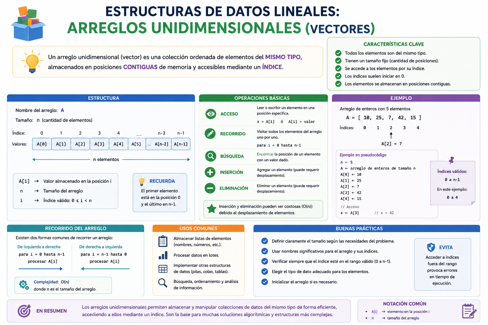

Imagina que eres el administrador del inventario de un hangar de naves espaciales. Si para registrar 100 naves crearas 100 variables individuales (`nave1`, `nave2`, ..., `nave100`), tu código sería una pesadilla imposible de leer. En lugar de eso, utilizas una estructura de datos lineal: un Arreglo (Vector). Un arreglo es como un casillero gigante del hangar escolar con un solo nombre general, donde cada compartimento tiene una etiqueta numérica (índice) para guardar y consultar cada nave velozmente mediante bucles.
⚠️ Debes visualizar el video completo sin adelantar para desbloquear la evaluación.
Material audiovisual adaptado con fines estrictamente educativos. Créditos del autor: Eductronica.

Un arreglo es una estructura de datos homogénea y estática que almacena un conjunto finito de elementos del mismo tipo bajo un único nombre de variable común.
¿Qué significa que un Arreglo sea una estructura de datos "Homogénea"?
¿Cómo identificamos o accedemos a una posición o celda específica de un Arreglo?
En la analogía del hangar, ¿qué elemento representa al "Arreglo" completo?
¿Qué implica que un arreglo posea una "Dimensión Estática"?
Si en PSeInt declaras un vector de dimensión 5, ¿cuántos datos del mismo tipo puedes resguardar?
¿Qué palabra reservada empleas en PSeInt para fijar formalmente el tamaño máximo de un Vector?
¿Qué estructura cíclica de control es la más idónea y utilizada para recorrer de principio a fin los índices de un arreglo?
Si un arreglo se llama `edades` e inicia en el índice 1, ¿cómo asignarías el valor 15 al primer casillero?
¿Qué error lógico severo ocurre al intentar acceder al índice 10 de un vector dimensionado únicamente con tamaño 5?
El uso de arreglos nos evita la fatiga estructural en el código de tener que...